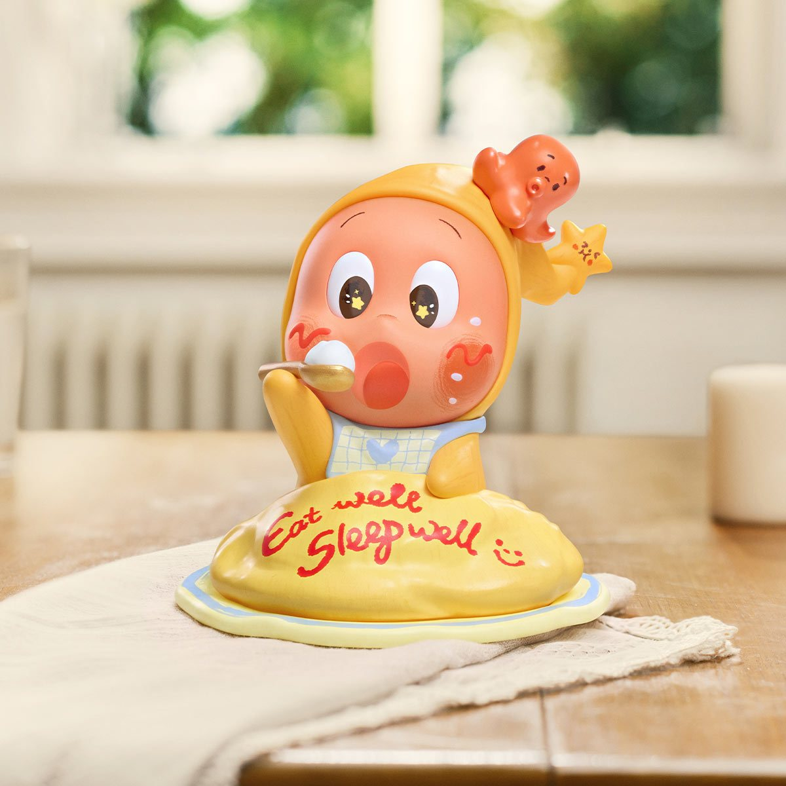
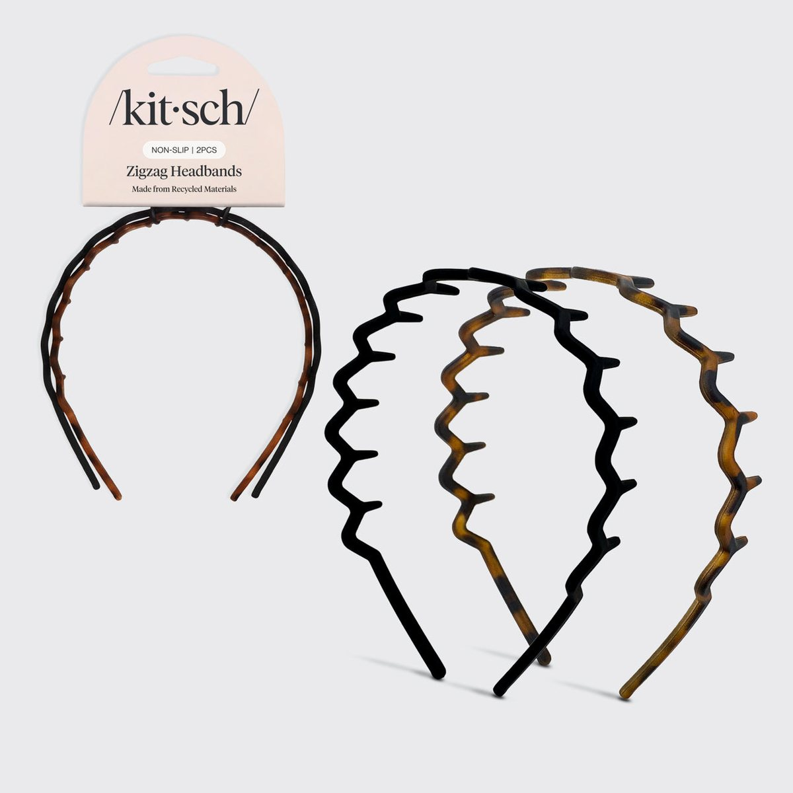
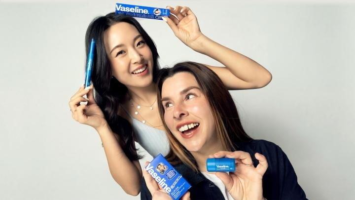
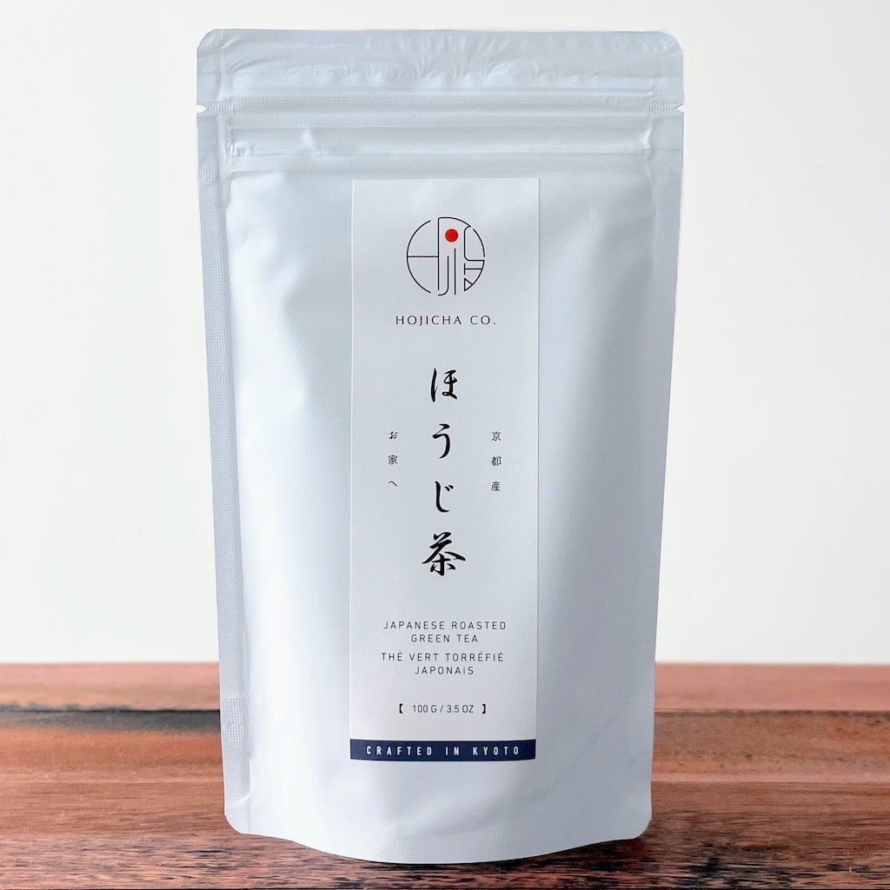
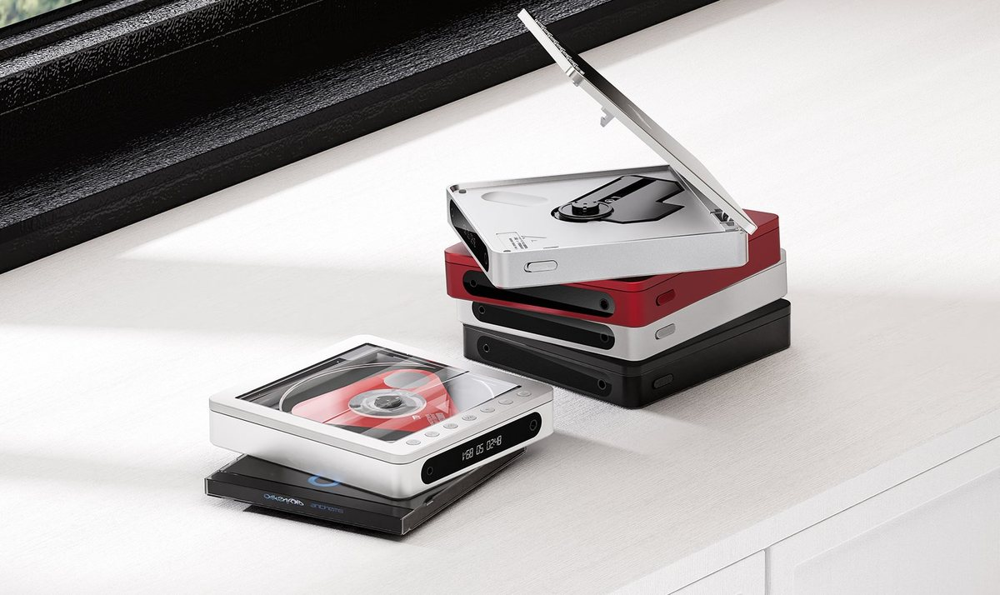
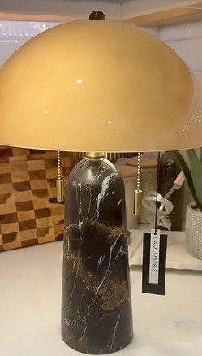
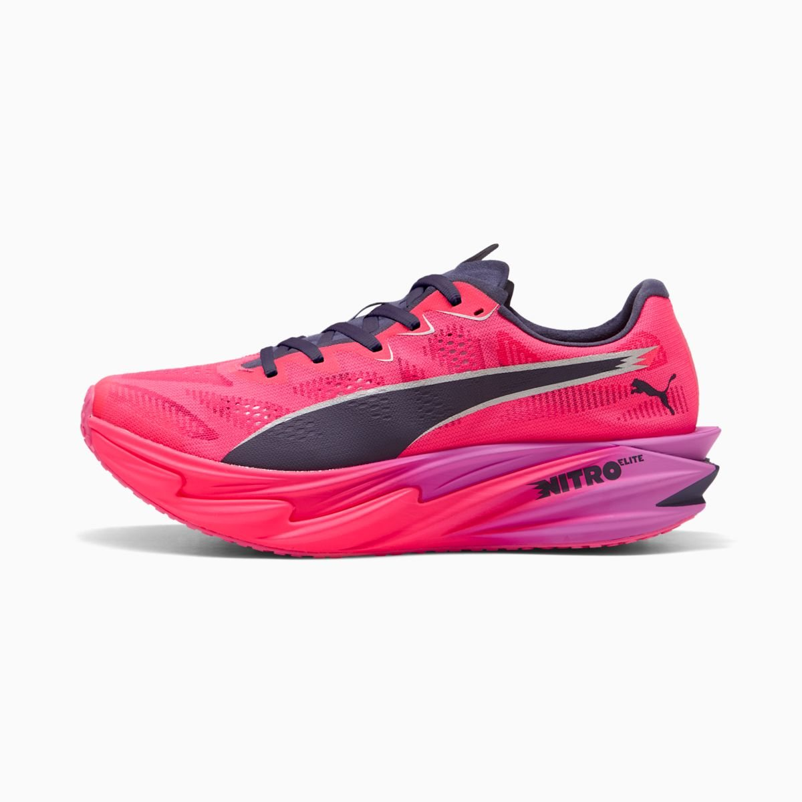
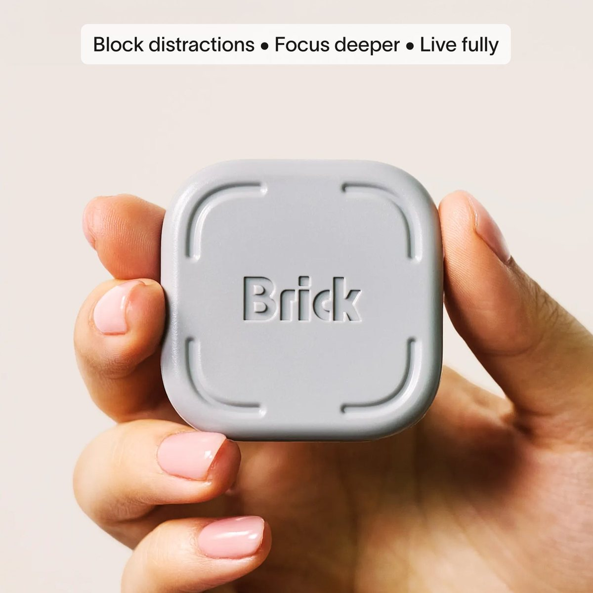
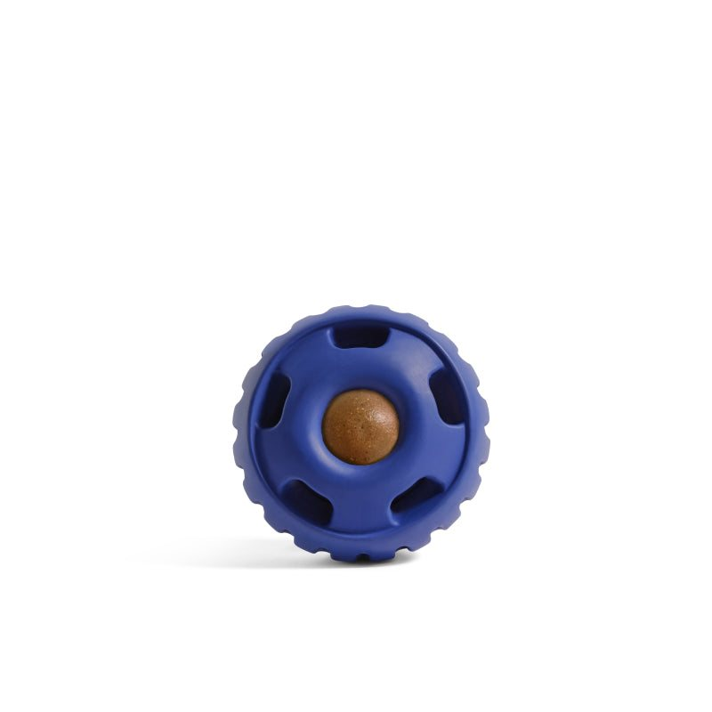
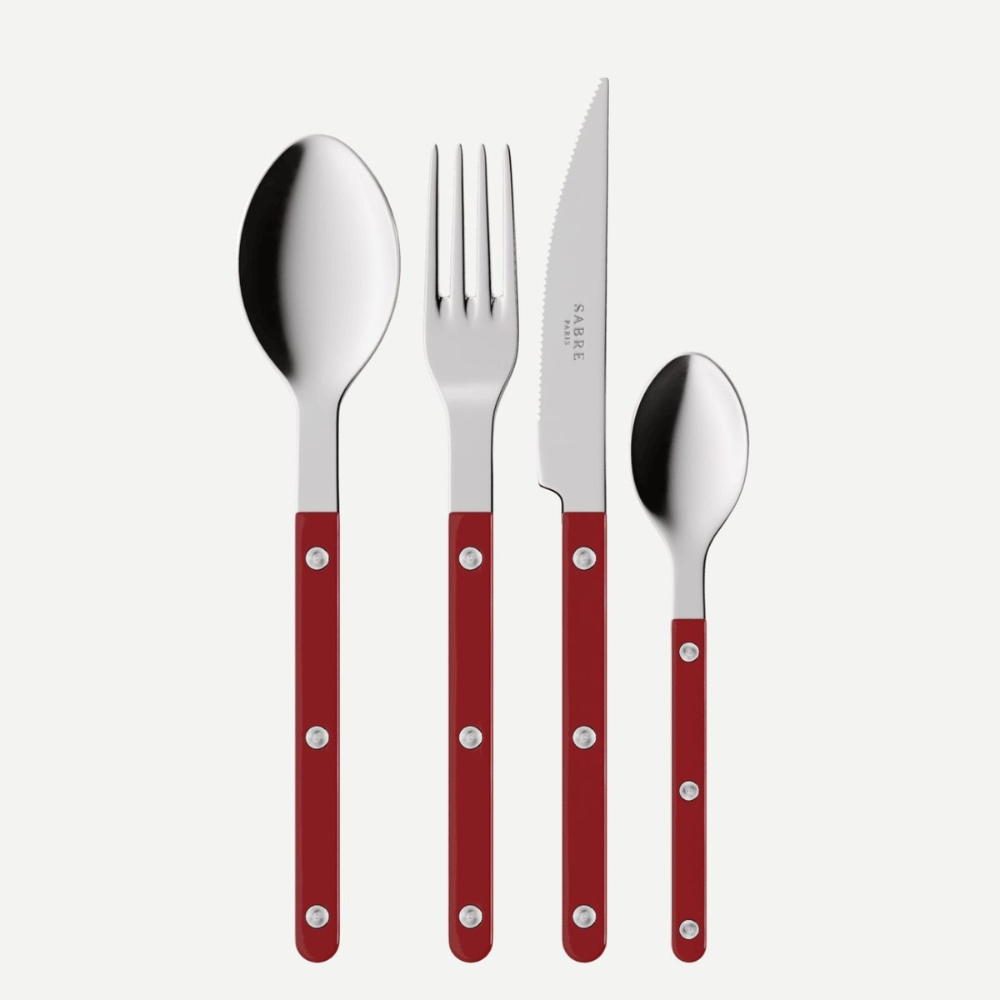

Pop Mart Twinkle Twinkle
Plush pendants reported selling out in minutes, with resale above retail, while the US Live the Ordinary series launched on 1 October 2026.
Identified on (2026-10-28)
signal 2/5 · illustrative
Twelve published picks, one in each category, plus the Labubu case study. Each card’s stage and meter come from the sources in the article. Meters are illustrative, not forecasts. Read the method before you treat any of this as a sure thing.
Signals are not guarantees. Meters summarize the public sources linked in each article. They are illustrative, not a forecast.

Plush pendants reported selling out in minutes, with resale above retail, while the US Live the Ordinary series launched on 1 October 2026.
Identified on (2026-10-28)

A 2-pack around $10, with Pinterest searches cited up more than 40% in a month and about 4,600 TikTok posts.
Identified on (2026-10-28)

Brow Tamer Jelly and an all-in-one primer, born from 2008 creator hacks, with TikTok Shop sell-outs reported in Thailand and a US launch still planned.
Identified on (2026-10-28)

Café hojicha lattes, including an iced one at The Coffee Bean & Tea Leaf, after searches for the drink were cited up 173%.
Identified on (2026-10-28)
Beth Brower’s self-published journals, picked up by Bloomsbury through volume 8, with volume 9 signed. The BookTok mention is a shop blog, so we treat it as weak.
Identified on (2026-10-28)

FiiO’s portable CD player, minus the AA batteries, in a year when John Lewis and others are reporting young people buying CD players again.
Identified on (2026-10-28)

About $80 at HomeGoods. It went viral in November 2025 and was reported back on the floor in October 2026.
Identified on (2026-10-28)

PUMA’s HYROX racing shoe, next to a cited search boom for the sport and a sell-out reported in Korea.
Identified on (2026-10-28)

hand2mind’s plush yoga-ball characters sold out on TikTok Shop. Three new characters and a Meijer rollout followed.
Identified on (2026-10-28)

A phone blocker around $59 in the phone-free wave. A habit tool only — we make no health claim about it.
Identified on (2026-10-28)

Woof’s refillable Pupsicle, with search lifts cited in 2026 pet trends and a TikTok Shop reviews page. No sell-out figure attached.
Identified on (2026-10-28)

Sabre’s Bistrot flatware, with cited search interest and lookalikes already showing up in the design press.
Identified on (2026-10-28)
A look back at how Kasing Lung’s toothy little monster, sold by Pop Mart, went from niche designer toy to global must-have — and which early signals were visible along the way.
| Stage | What it usually looks like |
|---|---|
| Very early | A few creators or fan communities mention it; little or no search interest yet. |
| Early | Short-form videos repeating; search interest lifting from a low base; first moves on Amazon Movers & Shakers or crowdfunding. |
| Rising | Mainstream mentions, restocks selling quickly, resale listings above retail. |
| Peak / past | Everywhere, widely copied. Covered here only as a case study. |
Resale prices matter a lot for collectibles but barely at all for kitchen gadgets; BookTok and library holds matter for books; Kickstarter and Product Hunt matter for tech. See the signals-by-category table or pick a category.